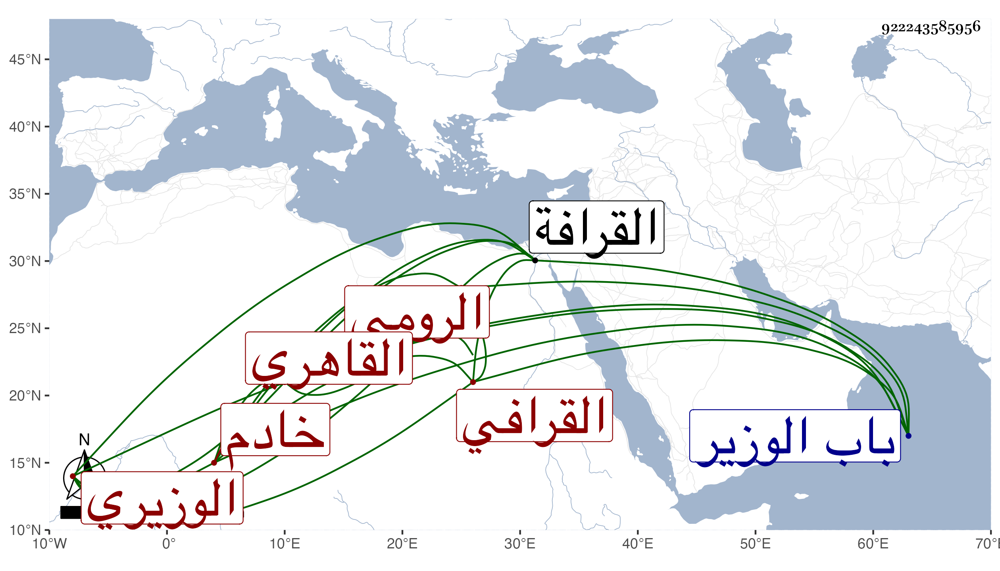

0902Sakhawi.DawLamic.ITO20230111-ara1.EIS1600.922243585956
Biography ID: 922243585956
588
حسين بن محمد بن أحمد الرومي الأصل القاهري الوزيري ثم القرافي خادم ضريح إمامنا الشافعي وبه يعرف . ممن ترقى في خدمته وصار أجل الجماعة وأثرى وانهمك على التحصيل وحصل كتبا وربما قرأ الحديث عند الديمي وغيره وتردد إلي لقراءة مسلم ، وكان متوددا . مات في ليلة الاثنين سابع ربيع الثاني سنة اثنتين وتسعين وذكر لي أقرب أولاده أنه قارب الثمانين وأنه ولد بالقرب من باب الوزير وتربى في خدمة بيت الأقصرائي ثم تحول وهو ابن عشرين أو نحوها إلى القرافة وصحب الشمس البدرشي وحكى لي عنه أنه قال له لبس الحلفايات سبب للخمول غالبا .
